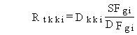
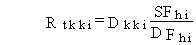
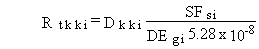
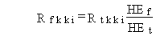

3.1.2 Lifetime Cancer Risk: USEPA Slope Factors
The USEPA has developed slope factors (USEPA 1994)
for exposure to radionuclides via inhalation, ingestion, and external direct
radiation from contamination on a ground plane. This method may be used
only to estimate lifetime risk of cancer incidence because the slope factors
are specific to total cancer incidence. The slope factors are intended
to be used to convert from radionuclide intake expressed as pCi ingested
or inhaled to lifetime cancer incidence risk. Factors are also given for
exposure to contaminated ground surfaces expressed as risk/yr per pCi/g
soil. Slope factors are not given for dermal absorption or external exposure
from air submersion or water immersion.
For ingestion exposures, the USEPA slope factors
may be applied as follows to the lifetime ingestion radiation doses generated
as described in the exposure pathway section:

(114)
where
Rtkki = total risk of developing cancer from the lifetime exposure for ingestion pathway kk and radionuclide i (risk/lifetime)
Dkki = lifetime committed effective dose equivalent for pathway kk and radionuclide i (rem)
SFgi = cancer incidence lifetime risk ingestion slope factor for radionuclide i (risk per pCi ingested)
DFgi = dose conversion factor for ingestion of radionuclide i (rem/pCi ingested).
For inhalation exposures, the USEPA slope factors may
be applied as follows to the lifetime inhalation radiation doses generated
as described in the exposure pathways section:

(115)
where
Rtkki = total risk of developing cancer from the lifetime exposure for inhalation pathway kk and radionuclide i (risk/lifetime)
Dkki = lifetime committed effective dose equivalent for pathway kk and radionuclide i (rem)
SFhi = cancer incidence lifetime risk inhalation slope factor for radionuclide i (risk per pCi inhaled)
DFhi = dose conversion factor for inhalation of radionuclide i (rem/pCi inhaled).
For external exposures to soil, the USEPA external
slope factors may be applied as follows to the lifetime external radiation
dose generated as described in the exposure pathway section.

(116)
where
Rtkki = total risk of developing cancer from the lifetime exposure for external soil pathway kk and radionuclide i (risk/lifetime)
Dkki = lifetime committed effective dose equivalent for external pathway kk and radionuclide i (rem)
SFhi = cancer incidence external slope factor for exposure to contaminated ground (risk/yr per pCi/g soil)
DEgi = dose conversion factor for external exposure to radionuclides on a ground plane for radionuclide i (rem/h per pCi/m2)
5.28 x 108 = units conversion factor to convert from concentration per unit area to concentration per unit mass and to convert time units (h/yr m2/g soil).
The units conversion factor is evaluated for an effective
soil depth of 4 cm and a soil density of 1.5 g/cm3.
The USEPA radiation slope factors have been developed
specifically for estimation of lifetime cancer incidental risks. These
factors can not be used to obtain a precise estimate of fatal cancer risk.
However, an approximate estimate of these risks can be obtained using the
radiation dose health- effects conversion factors described in Subsection
3.1.1. The lifetime total cancer fatality risk is estimated, as follows:

(117)
where
Rfkki = risk of developing fatal cancer from lifetime exposure for pathway kk and radionuclide i (risk/lifetime)
Rtkki = total risk of developing cancer from lifetime exposure for pathway kk and radionuclide i, evaluated using the USEPA slope factors (risk/lifetime)
HEt = total cancer lifetime risk health-effects conversion factor (risk per rem)
HEf = fatal cancer lifetime risk health-effects conversion factor (risk per rem).